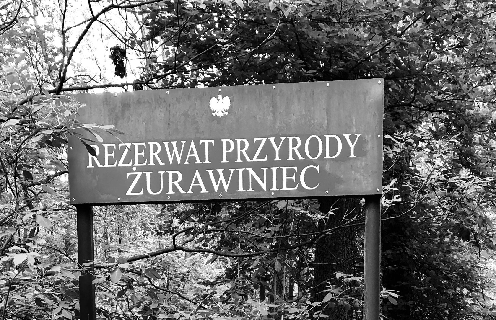
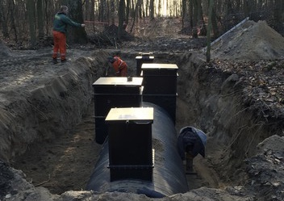

Rezerwat przyrody Żurawiniec powstał w celu ochrony zespołu roślinności torfowiska przejściowego.
Jego utworzenie datuje się na rok 1959 z inicjatywy Heleny Szafran.
Torfowisko wykształciło się w bezodpływowym zagłębieniu terenu stanowiąc rynnę polodowcową.
Ze względu na szybki rozwój pobliskich osiedli deweloperskich na Naramowicach i Piątkowie rezerwat z czasem zaczął przechodzić kryzys spowodowany zmniejszeniem spływu wód deszczowych na jego powierzchnię. Doprowadziło to do niemal całkowitego wysuszenia torfowiska.
Po wieloletnich próbach zahamowania tego procesu, w końcu w 2015 roku udało się zaponować nad sytuacją dzięki doprowadzeniu wód gruntowych, wykorzystując zjawisko retencji.
HISTORIA REZERWATU

Poniższe zdjęcie przedstawia budowę rury
doprowadzającej wodę do rezerwatu

WYBÓR PODSTRON